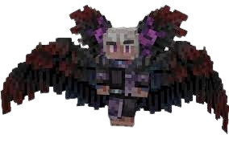
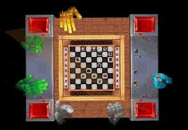

Игра Бога
сезон, у якому ми знайомимося з Джодахом і Споглядачем, які є одні з основних сюжетних лиць в подальших сезонах. Також ми дізнаємося, що лололошка світоходець
сюжет
Розділ 1 - Переплетіння доль
1-10 серія
Лололошка перемістився в новий світ. Поступово він став облаштовувати свою базу. Часом він піддавався різним знущанням і лихам з боку невідомого Люціуса.
Одного разу він зустрів зграю вовків, яка напала на папугу. Герой розправився з ними і з'ясував, що папуга розумний і вміє говорити, його звали Картер. Він подякував Лололошку і порадив ніколи не ходити на північ, але Лололошка не послухав його і знайшов дивний покинутий замок.
Незабаром Картер повернувся до Лололошка і повідомив, що того хоче бачити якийсь старець, що живе на підніжжі гори. Прийшовши до нього, Лололошка дізнався, що його звати Бастіан, він маг зі стажем 40 років і хоче попросити героя попіклуватися про Картер та його сина Роджера, бо в мага з'явилися термінові справи через дивні аномалії у світі. Лололошка погодився.
Одного разу до Лололошки навідався сам Люціус і випадково вбив Картера блискавкою. Виявилося, що він напівбог, у якого відібрала сили верховна рада Богів за його витівки. Люціус просить героя про допомогу в поверненні сил, але той відмовляє. У гніві Люціус йде. Герой розповів це Бастіану, після чого він замислившись пішов у справах.
11-20 серія
Игра Бога11
Лололошка приходить у той замок на півночі та зустрічає Люціуса. Напівбог каже, що дає йому другий шанс і просить прощення за смерть папуги, але незважаючи на це, отримує відмову. Розлютившись, напівбог знову насилає лиха на героя. Не в силах терпіти, Лололошка погоджується на допомогу. За планом напівбога потрібно знищити верховну раду Богів для отримання влади над всесвіту. Оскільки герой не знає способу зв'язку з Богами, то він вирушає до Бастіана.
Лололошка розповідає магу про Люціуса, він не вірить у це, проте все одно погоджується на зустріч.
Через кілька днів Люціус і Лололошка приходять до Бастіана. З'ясувалося, що він з'їв Я-ягоду і не може нормально говорити. Лололошка вирушає за антидотом. Після прийому ліків маг заснув, скоро йому має стати легше.
Лололошка знову приходить до Бастіана і Люціуса. Маг не вірить у те, що він напівбог і виганяє обох з дому. Пізніше Бастіан все ж таки погоджується допомогти і каже, що його друг на ім'я Аргус може знати спосіб зв'язку з Богами.
Через деякий час Бастіан повідомляє, що Аргус згоден на зустріч. Пізніше маг запитав про папуг, проте герой усе ще не хоче говорити йому про те, що сталося.
Після Лололошка застає Аргуса разом із Бастіаном. За чашкою чаю Аргус розповів легенду про амулет напівбогині Еоли, де ув'язнена частина її душі, його було дано расі фей, щоб зв'язатися з його носієм. Амулет може перебувати в одного коллекціонера. Герой йде до Люціуса і ділиться новинами. Напівбог зрадів і одразу погодився піти на пошуки амулета. Вони добираються до потрібного колекціонера. Виявилося, що амулет був проданий. Вони знаходять людину - покупця амулета, і викуповують його взамін на зілля асиміляції. Амулет був зламаний на дві частини, але Лололошка зміг його полагодити. Тепер амулет потрібно перевірити на справжність, можливо, їм так і не вдасться зв'язатися з Еолою.
На Лололошку напала дивна істота, виявилося, що це знайомий Люціуса - демон Воланд, з яким він утік із в'язниці часу багато років тому. Напівбог заступився за героя, тепер Воланд пішов у ад.
Бастіан став вчити Лололошку магії вогню. Люціусу не сподобалося це, він сказав, що Лололошка більше не потрібен йому. Тепер Лололошка горить при вході в замок напівбога.
21-30 серія
Игра Бога21
Лололошка говорить про те, що сталося, Бастіану, той робить йому зілля захисту від вогню і каже, що їм треба й далі тримати Люціуса у себе. Поки що він не може сказати чому, але це дуже важливо.
Виявилося, що існує якесь древо, що підтримує баланс між світами. Спеціальний Орден охороняє його, а на чолі стоїть великий маг Джодах, але зараз стали відбуватися дивні аномалії, древо почало в'янути, і для підтримки древа потрібна божественна сила напівбога. Ніхто, окрім фей, не знає, як можна передати силу Люціуса у древо, тому Бастіан просить Лололошку завести фею. Джодах може допомогти повернути сили Люціуса, якщо напівбог їм допоможе.
Зілля захисту вже готове, тож Лололошка приходить до замку до Люціуса і повідомляє новини. Напівбог згоден і разом із Бастіаном вони проводять дослідження його сил. З'ясовується, що його магія ідеально збігається з магією дерева.
Лололошка готується, щоб завести фею: не їсть три дні, навчається магії, будує будиночок для неї та інше, а потім нарешті йому вдається завести фею на ім'я Сєлєсті, з якою він швидко подружився.
Воланд став нападати на Лололошку і громити все навколо. Кілька днів потому він прийшов до Люціуса і повів його в невідомому напрямку, руйнуючи все підряд. Лололошка просить Аргуса допомогти з демоном, спочатку той не вірить, оскільки раса демонів зникла дуже давно, але побачивши докази, погоджується. Він проговорився, що хоче когось врятувати, герой думає, що Аргус хоче використати Воланда для своїх цілей і щось приховує.
31-40 серія
ИграБога31
Аргус та Лололошка підготували все для впіймання демона, а після заточили його в клітку. Виявляється, що хтось дав йому такі сили, через що в нього почалися напади. За допомогою спеціальних кристалів вони забирають частину його сил, після чого демон втрачає свідомість. Аргус поводиться дивно і продовжує щось приховувати.
Люціус став добрішим і завів собі змію на ім'я Айко, але приховує це і просить Лололошку віднести її до Бастіану, бо вона погано себе почуває. Виявилося, що вона просто давно не їла.
Аргус продовжує приховувати щось від Лололошки і ховає демона в себе в підвалі, кажучи, що той іще не прокинувся.
У світі продовжують відбуватися аномалії. За ідеєю Сєлєсті можна занести частину душі Люціуса в Амулет Еоли і вже потім спрямувати її в древо, але для цього Бастіану потрібно навчити Лололошку вищої магії.
За допомогою Сєлєсті та амулета Еоли Бастіан зв'язується з Джодахом, він каже, що намагається зробити все, що в його силах, щоб втримати аномалії та древо, а поки що потрібно дотримуватися їхнього плану.
Сєлєсті знайшла уривок книги в бібліотеці фей, де йшлося, що Амулет Еоли - вигадка. Щоб дізнатися це, маги приготували зілля правди, яке може розповісти правду про будь-який предмет або людину.
Активувавши зілля на амулеті, з'ясувалося, що Аргус таємно використав його та залив туди силу Воланда, щоб зняти прокляття зі своєї коханої - Катерини. Він довго намагався зробити хоч щось, але в нього не виходило. Коли Лололошка розповів про Воланда, у Аргуса з'явилася надія, адже кров демона може вилікувати від будь-якого прокляття. Він зрадив Бастіана, приховуючи це так довго. Він жертвував порятунком цілого світу заради своєї любові. Пізніше Аргус розкаявся у своїх вчинках, Бастіан та Лололошка прощають його.
Виявилося, що амулет і так був порожнім, значить Сєлєсті мала зв'язок із деревом і без його допомоги, з цього з'явилася нова ідея - пропустити частину душі Люціуса через Сєлєсті та скерувати її в дерево.
До Лололошки приходить невідомий, це був якийсь Міжсвітець. Він сказав не гратися з вогнем і пам'ятати головну місію героя, а також, що він завжди спостерігає за ним.

41-45 серія
Игра Бога41
Щоб правильно передати магію Люціуса через Сєлєсті в древо, Бастіан почав проводити досліди з феєю. Також Люціус вирішив навчити Лололошку магії вогню і став його "вчителем".
Аргус показує друзям лабораторію з проклятою Катрериною та Воландом, які перебувають у дивних капсулах.
Бастіану потрібен магічний пристрій для передавання магії в древо, для цього він із Лололошкою йде до Аргуса за книгою з магічної інженерії. Аргус знаходить книгу якогось Довіна Баана. Виявляється, що він був загиблим батьком Катерини. Дивно, що дівчина ніколи нічого не говорила про нього.
Поки Аргус пішов у бібліотеку, Воланд нарешті отямився і вийшов із капсули. Він одразу зустрів Лололошку, який розповів йому частину історії, що сталася з ним. Після герой пішки разом з ним пішов до Люціуса, так як у Воланда пропали сили. Люціус прихистив у себе Воланда. Демон помітив, що Люц змінився, тепер він став "більш м'якотілим".
Лололошка розповів про Воланда Бастіану, той запропонував збудувати святилище біля замку Люціуса, що посилить магію Лололошки та захистить Воланда в разі чого.
Люціус дуже переживає через убивство Картера і хоче розповісти все Бастіану.
У світі продовжують відбуватися дивні аномалії. Лололошка вперше приходить до Джодаха, і разом із Бастіаном з'ясовує, що тепер навіть його сили не вистачає на підтримку древа. Потрібно терміново щось робити інакше процес стане незворотнім.
Лололошка активував великодній меч і перемістився в темну печеру, де знайшов діадему. Дивний голос сказав, що її звуть Спектра і її заточив у діадему злий маг дуже багато років тому. Лололошка допоміг їй вибратися і на знак подяки отримав її діадему, що дає змогу керувати магією кольору.
Розділ 2 - В'язень
46-50 серія
ИграБога46
Люціус та Лололошка розповіли Бастіану про смерть Картера. Він був злий, але пробачив їх. Після вони забрали Роджера, який ховався в далекій печері весь цей час.
Аргус нарешті повертається додому і готовий приступити до зняття прокляття. За допомогою заклинання Лололошка пробирається у свідомість проклятої Катрерини і звільняє її душу. Тепер дівчина має відпочити і скоро прийде до тями. Також з'ясувалося, що вона була магом-інженером і приховувала це, бо всі звичайні маги зневажали таких, як вона та її батько.
Потім Катерині розповіли все, що сталося. Тепер вона має допомогти зібрати магічний пристрій, щоб передати магію Люціуса в дерево. Вона побудувала величезну майстерню і почала розробляти механізм.
У світі з'явилися величезні комарі переростки з іншого світу, це відбувається через в'янення дерева. Навіть Джодах продовжує втрачати свою міць.
Бастіан продовжує навчати Лололошку магії, щоб той вступив до Ордену. Пізніше герой нарешті побував в Ордені і ближче познайомився з Джодахом. Він провів його територією і все показав, а потім вони взялися за будівництво пристрою Катерини.
51-60 серія
ИграБога51
Нарешті, коли механізм був добудований, Сєлєсті посадили всередину нього й активували, у древо був спрямований промінь магічної енергії Люціуса. Але сталося щось дивне і Лололошка разом із Сєлєсті опинився в темному і ворожому світі без будь-якого спорядження. Виявилося, що це був загиблий світ фей, знищений Богами дуже давно.
Використовуючи підказки в будинках мертвих фей, герої знайшли усипальницю Еоли і змогли активувати портал до свій світ. Пізніше Лололошка навіть не зміг підійти до вмираючого дерева, його стримував магічний бар'єр.
Пізніше маги відключили бар'єр і розповіли, що Люціус і Джодах зникли. Після активації стався вибух і в дереві з'явився портал у світ фей. Усі вирішили, що Люціус використовував магів для повернення сил і обдурив усіх, взявши Джодаха в заручники. Члени ордену вирішили відшукати магічні предмети в кімнаті Джодаха, щоб знайти й здолати Люціуса, але Лололошка знайшов старий щоденник Джодаха, де розкрилася вся правда: виявилося, що Джодах давно вже намагається стати самим Богом, він підлаштував усі аномалії, древо не підтримувало світ, а сам він злочинець, який втік із В'язниці часу багато років тому разом із Люціусом, саме він поглинув расу демонів і саме він убив Еолу, забравши її силу, тепер він хоче використати Люціуса, аби досягти мети. Всі члени ордена були обмануті, ніхто не вірить, що їм вдасться здолати самого Джодаха, але один тільки Бастіан не втрачає надій.
Лололошка з іншими магами був біля Древа, як раптом прийшли інші маги Ордена. Вони вирішили, що герої причетні до зникнення Джодаха і наклали на них заклинання правди і в підсумку зрозуміли, що вони не винні. Герої все розповіли магам і вирішили об'єднатися. Бастіан з ученими став досліджувати дивні плями навколо Древа, а решта пішли обшукувати кімнату Джодаха під проводом його колишнього заступника й поточного лідера Ордена - гобліна Емріса.
Лололошка провідав Воланда і розповів події. Тепер він сам хоче врятувати Люціуса і пішов у невідомому напрямку.
Щоб закрити портал у дереві та зупинити проникнення комарів-мутантів, Аргус і Катерина запустили в світі фей бомбу, але щось пішло не так і вони не змогли повернутися. Швидше за все, вони загинули, але змогли закрити портал.
Бастіан та Емріс дали Лололошці заборонений сувій Джодаха, який дає змогу здобути всі знання в магії. Тепер герой став дуже сильним магом.
Щоб остаточно позбутися комарів, Бастіан зробив спеціальну отруту і встановив пастку для них разом із Люком та Альбертом - членами Ордена. Тепер поступово вони вмирають. Одного разу Бастіана вкусив один із комарів, після чого він мало не помер, але Лололошка зміг його врятувати. Незабаром всі комарі були знищені.
Щоб знайти Джодаха маги виготовляють спеціальні окуляри для пошуку його магічних слідів. Коли вони готові, Лололошка з Бастіаном вирушили слідами Джодаха, але дорогою йому стало зле. Сєлєсті і Лололошка віднесли його в орден. Його стан був дуже поганий, Беннет взявся за виготовлення ліків і став стежити за його станом.
61-70 серія
ИграБога61
Збожеволілий Воланд у люті став величезним і змінив свій вигляд. Він увірвався в Орден і викрав Сєлєсті, заявляючи, що вони самі вкрали Люціуса і втік у невідомому напрямку.
Лололошка розповів про це Емрісу. Він придумав використовувати магічні окуляри, налаштовані на магію демона, щоб знайти його сліди. По слідах Лололошка знайшов його, демон тут же напав на нього, а потім раптом захотів допомагати. Сєлєсті не хоче довіряти демону. Тепер він прийшов до Ордену, де маги будуть допитувати його і дізнаються справжні наміри.
З'ясувалося, що Воланд справді хоче допомогти. Щоб він нормально міг ходити всередині Ордена, його зменшили в розмірах за допомогою спеціального заклинання.
Емріс провів термінові збори і виголосив надихаючу промову. За його планом спочатку потрібно спрямувати всі сили на порятунок Бастіана, а вже потім ловити Джодаха.
Лололошка прийшов у будинок Бастіана перевірити тварин, але застав там дивну істоту на ім'я Пімпаджон. Виявилося, що він привласнює собі порожні будинки, з яких робить ринок. Він розповів про якогось мессира, жертвопринесення і якогось білокрилого ангела. Можливо це був Джодах.
Беннет знайшов новий спосіб допомогти Бастіану за допомогою унікальної речовини - есенції бурхливого життя. Зробити її можуть тільки феї. Тому Лололошка з Сєлєсті вирушили до її подруг, відновили сховище меду, після чого вони змогли виготовити цю есенцію. Після прийому якої Бастіану стало легше.
Пімпаджон показав дім того ангела, усюди були пір'я, магічні предмети та символіка Ордена. Можливо, це справді Джодах.
Після приходу в Орден Лололошка застав усіх, крім Воланда, сплячими. За запискою Емріса герой знайшов книгу, де з'ясувалося, що вони потрапили в жахіття дівчини-привида на ім'я Енарія, яка живиться життєвою силою людей, що потрапили до її жаху.
Щоб звільнити всіх від жаху Лололошка вирушив у її світ за допомогою спеціального ліжка. У замку він зустрів її добру сестру, яка хотіла допомогти герою, але виявилося, що це й була Енарія, яка обдурила Лололошку. Герой здолав дівчину і звільнив усіх від сну.
Поки їх не було Воланд влаштував повний бардак і говорив про якихось дивних мешканців.
Бастіан нарешті прокинувся і заговорив, Лололошка розповів йому все, що сталося, а потім він знову заснув. Поступово він приходить до тями.
На території Ордена Лололошка знайшов записку з погрозами, де йшлося про якогось мессира. Він розповів про записку та історію з Пімпаджоном Емрісу. Він пішов шукати відповіді в книгах.
Лололошка знову прийшов у той будинок і зустрів там людину, схожу на Джодаха. Це був його брат на ім'я Джейс. Він розповів, що їхній рідний світ Скайзерн був знищений напівбогом Зеферіоном. Джодах хоче помститися йому. Також Лололошка розказав усе, що робив Джодах, Джейсу потрібен час, щоб усе обміркувати.
Герой повідав про Джейса Емрісу. Вони відразу вирушили до нього і він розповів історію свого світу. Після вони пішли в Орден «для знайомств». Емріс не хоче йому довіряти.
Щоб здолати Джодаха, вони вигадують новий план: знайти якогось напівбога, Джейс поглине його, і, використовуючи його силу, битиметься з самим Джодахом.
На Лололошку продовжують нападати Пімпаджон і його поплічники, кажучи про якогось мессира. Магам потрібно з'ясувати хто це, щоб припинити напади.
Пізніше герої вирушили в Край до напівбогині Абісса. Виявляється, вона стежила за ними весь цей час. Після вони забрали її силу. Як тільки Джейс почав поглинати її силу, з'явилися Люк та Крайр і перенаправили її в накопичувачі. Емріс сказав, що не довіряє Джейсу, після чого різко телепортувався з усіма в лабораторію, де розповів, що робити далі. Зараз потрібно зробити розпізнавач магії, щоб знайти Джодаха серед світів.
71-84 серія
ИграБога71
Виявилося, що мессиром увесь цей час був Воланд, фанатики думали, що його викрали і намагалися врятувати. Вони забрали його у своє лігво і демон сам зупинив і заспокоїв їх.
Біля Ордена виявили дивну аномалію - величезний лавовий кратер, під час досліджень з'ясували, що він має божественну структуру магії Люціуса.
Члени Ордена стали створювати пристрій для пошуку Джодаха. Він працює на основі джерел Елдріна - місць з особливими скупченнями магії: Земля, Вогонь, Вода, Повітря, а також два особливих, що випускають чисту магію, - це ендер і "чаклунське" джерела. Вони створили магічні конструкція в кожному з джерел. За допомогою об'єднаних джерел магії в один пучок вони зможуть телепортуватися в інші світи і знайти сліди магії Джодаха в інших світах.
Воланд розлютився на всіх, сказавши, що вони нічого не роблять, і пішов шукати Люціуса зі своїми підопічними сам, але Лололошка зміг його заспокоїти і повернути.
Джейс каже, що якщо вони знайдуть Джодаха, то він хоче забрати його сили для відновлення скайзерна. Майже ніхто йому не довіряє. Пізніше Пімпаджон прийшов до Лолошки, сказавши, що білокрилий англел творив жахливі речі. Але Джейс відповів на це, що нічого не розуміє і вигнав героя.
Усе нарешті готово до пошуків Джодаха, Емріс та Бастіан з Лололошкою відправились до інших світів і зібрали різні зразки для досліджень. В одному з яких виявили сліди дуже потужної магії.
Сєлєсті наснився страшний жах, де був якийсь пес, сміх і листя.
Джейс зібрав членів Ордену та розповів лекцію про світоходці та міжсвітців. Виявилося, що Лололошка і є світоходець, тобто може вільно переміщатися між світами. А міжсвітці - стародавні істоти, подібні до Богів, які живуть у порожнечі між світами. Про них немає точної інформації, тільки легенди.
Емріс та Бастіан з Лололошкою продовжують збирати сліди Джодаха. Тепер вони мають відкрити кротову нору, щоб переміститися в конкретний, а не випадковий світ, де він може перебувати.
Джейс провів ще одну лекцію і розповів про магію руйнування, під неї може бути адаптована будь-яка стихія. Якщо всі члени Ордена використовують магію руйнування на накопичувачі з магією Абісси, то її можна посилити настільки, щоб убити Джодаха.
Сєлєсті знову наснився сон. На прохання Лололошки Цесанна, яка знається на тлумаченні снів, розповіла, що означають сни Сєлєсті: болісна смерть, яка трапиться з волі долі. І в'язень відкриє браму...
Джейс розповів Лололошці, що потрібно знайти Довіна Баана для порятунку Катерини та Аргуса. Виявилося, що він живий, але про нього ніхто не пам'ятає. Джейс думає, що хтось використав заклинання пам'яті та стер спогади про нього у всіх членів Ордена.
Виявилося, що Бастіан та Емріс помилилися: сліди, знайдені в інших світах, належало порожнечному хробаку. Однак його можна використовувати, око хробака дає змогу побачити те, що найбільше хоче дізнатися людина. Щоб знайти його потрібно виготовити приманку.
Коли приманка для хробака була готова Лололошка відправився в енд для його призову. Лололошка розправився з хробаком і дістав його око, а після на нього напала Абісса і ледь не вбила, герой зміг врятуватися. Бастіан та Емріс стали готувати око хробака для пошуків Джодаха.
Джейс, Сєлєсті і Лололошка вирушили в лабораторію Аргуса в пошуках інформації про Довіна та знайшли там два його журнали, де йшлося про його історію потрапляння до іншого світу, вивчення здібностей світоходця та інше. Виявилося, що він колись працював в Ордені, допомагав Джодаху і є частиною його плану.
Сєлєсті почала себе дивно почувати і відвела Лололошку до незвичної печери, де перебував Міжсвітець, він сказав, що скоро помре і сподівається, що йому сподобається новий провідник, а також дав йому особливий меч під назвою Світоч порожнечі.
Розділ 3 — Гра Бога
85-88 серія
ИграБога85
Коли все готово до використання ока хробака, Лололошка використовує його і починає бачити очима Джодаха. Він був у В'язниці часу, де разом із Наглядачем, наглядачем у цій в'язниці, він відправив туди Абіссу та забрав силу одного з Міжсвітця, щоб уміти переміщатися по світах. Після він вирушив у Скайзерн, забрав силу в Зеферіона і ув'язнив його, сказавши під кінець, що дасть час підготуватися членам Ордена. Він хоче знищити всіх напівбогів та відновити порядок всесвіту.
Емріс скликав усіх і розповів, що робити далі, а потім члени Ордену розповіли свої історії і те, як вони потрапили до Ордену, а потім пішли готуватися.
Емріс розповів Лололошці свій план: він хоче пропустити через себе божественну магію Абісси, вживити її в себе, ставши зброєю і ціною власного життя здолати Джодаха. Герою здається, що він «поїхав кукухою».

89 серія (фінал)
ИграБогаФинал
Усі члени Ордена в зборі: Альберто, Бастіан, Воланд, Джейс, Країр, Люк, Селесті, Цесанна, Емріс з Лололошкою. Тепер вони чекають на прихід Джодаха до Орден і готуються до нападу.
І ось, коли Джожах вже з'явився, всі маги почали атакувати, проте нічого не подіяло, він застосував заклинання остовпіння. Під час розмови з Воландом він повернув йому живого Люціуса, у якого забрав сили.
Джодах розповів, що весь цей час спостерігав за Люціусом і за тим, як він змінювався, з напівбога ставав людиною. Він хотів повернути його сили, бо вони йому більше не потрібні, але напівбог відмовив.
Також він повідав історію демонів і їхньої загибелі: вони володіли даром бачити майбутнє і дізналися, що вони всього лише іграшка в руках напівбога Івліса, брата Люціуса, і їхні життя нічого не варті. Вони почали війну з ним і вийшли переможцями, але тоді їх залишилося лише тисяча. Вони боялися своєї загибелі, Агнія, що за ними прийдуть. І Джодах поглинув їх усіх. Він шкодує про свій вчинок.
Емріс наказав знову почати атаку і пропустив через себе всю напівбожественну магію і загинув. Ніхто не міг повірити, що це сталося з його ж власної вини, не можна було пропускати так багато магії через себе. Джейс сказав, що єдиний, хто може дати відповідь на всі питання - це Джодах.
Джодах почав свою розповідь: після здобуття тисячі очей він хотів тільки сили. Він познайомився з Люціусом у В'язниці часу, де той і розповів про напівбогів. Після цього Джодах захотів знищити всіх напівбогів, жорстоких і жадібних. Увібравши я себе силу Еоли, він зрозумів, що майже не відрізняється від них, його бажання помсти та переконання були такими ж, як і в них. Але незважаючи на це, він хотів триматися заданого курсу і вбити Зеферіон|Зеферіон.
Зустрівши Довіна в Даліваріку (світі, де відбувалися всі події), за допомогою тисячі очей він показав йому все: загибель світів, майбутнє його дочки, напівбогів і все інше. Довін|Довін дуже злякався, усвідомлюючи всю свою даремність у цьому світі порівняно з богами, і попросив лише одне: не дати померти його доньці.
Виявилося, що Щоденник Джодаха був неправдивим після моменту поглинання сил Еоли, щоб той став "вказівкою до дії" головним героям.
Джодах розповів про роль Довіна: йому було доручено зібрати команду з довірених осіб анклаву - академії в Скайзерн та надати їхньому заклинанню контролю, щоб створити новий Скайзерн. Новий світ отримав назву Синьолист. Після закінчення всіх справ Джодах хотів заселити цей світ скайзернівцями, яких вдалося врятувати Довину за допомогою піднебесної колиски - великої та посиленої банки стиснення простору, в яку було збережено частину Скайзерна з його жителями.
Джадах також виконав перед усіма свої "зобов'язання": членам Ордена він залишив усю свою біблеотеку з накопиченими знаннями, Сєлєсті дав силу напівбога для відновлення Світу фей, Бастіану залишив управління Орденом, Джейсу також дісталася сила для заселення Синьолиста Скайзернівцями, які вижили.
Сєлєсті телепортувалася кудись і повернулася з Арґусом і Катріною, які вижили в мертвому світі фей.
Раптом з'явився розрив матерії просто в кімнаті і Джодах ціною власного життя заради порятунку світу закрив його, поглинувши всю пустотну енергію. Він хотів щось сказати Лололошці, але помер. Останні хвилини життя він провів із близькими людьми і загинув щасливим.
Насправді Джодах не загинув і спеціально влаштував цю «виставу», щоб вони не шукали його і він залишився б у їхній пам'яті.
У самому кінці показали чотирьох головних Богів, які грали в шахи з фігурками головних героїв. Одна з фігурок почала рухатися - це був Джодах, який став новим гравцем. Тепер Джодах став Богом.
Після всіх подій Лололошка перемістився в новий світ.
90 серія (Друга кінцівка)
ИграБогаПасхальная концовка
Лололошка взяв світоч порожнечі та увійшов у розрив простору, потрапивши в дивний порожній простір, де Джодах повідав йому свою історію: все почалося з прокляття його сім'ї, він був змушений вбивати і поглинати сили живих істот, щоб вижити. У хлопчиків це проявляється тільки в 13 років, після чого всіх хлопчиків відправляють у Дизміст - моторошне злочинне місто на околицях Скайзерн, де навчають вбивати. Їх цуралися в суспільстві та боялися.
Дівчатка ж могли народжуватися тільки в королеви, самі вони не могли народити дітей жіночої статі. Здатність народжувати дівчаток могла передатися від старої королеви до нової, але не у спадок, а за допомогою спеціального ритуалу, що вбивав стару королеву.
Коли Джодах був дитиною, він вступив до школи магії, яку діти закінчують у 13 років, якраз через Аві, щоб вони могли здобути освіту перед засланням до Дизмісту. Джодах став ізгоєм через свої дивацтва, його вважали вбивцею і знущалися. Одного разу він не витримав знущань і постійних принижень, поглинувши одного з учнів. За що його відправили в Дизміст, коли йому було всього 10 років. Спочатку він хотів помститися їм усім, але зрозумів, що його здатність дає змогу не просто поглинати життя, а й змінювати долі людей, сімей, країн і цілих світів.